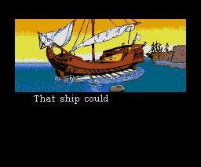

|
Pentaro Odyssey 2 comes in a nice box made by Club Hnostar, which is in full colour. On the back are some screen shots and you can find the story in Spanish and in English. It contains a nice manual and one game disk with a standard Sunrise coloured quality label. The manual has a coloured cover and nicely printed pages in the quality you expect from Hnostar. The manual is in Spanish and English just like the text on the back. This is a bit strange for me: after seeing the Manual of Realms of Adventure I would have expected also a Dutch version. Not that it is a big problem, because Pentaro Odyssey is a game that is easy to understand. There are some nice black and white screen shots and drawings in the manual to make it all complete.
The story
Long ago, the evil emperor Penguin happened to meet one of his subjects, Lucytesse — beauty — and he fell madly in love with her. His love was unrequited, though. She only had eyes for her beloved Pentaro. They were a happy couple but the emperor, in a fit of rage and jealousy, kidnapped Lucytesse, and carried her off to his palace on the South Pole. Pentaro went after it and rescued Lucytesse.
They lived happily together for a while, far from the realms of the emperor. Nevertheless, one day the emperor took his revenge and kidnapped Pentaro this time. The emperor locked Pentaro up on an island far away from the South Pole. After Pentaro escaped from the Emperor in ‘Pentaro Odyssey the Revenge’, he needs to get off the island. Here is where you come in.
Note that this story is in the manual; there is no intro demo.
The same game again or not?
Most times you see that a sequel is almost exactly the same game idea
without any nice improvements. Only graphics and the music have been improved.
This is not the case with Pentaro Odyssey 2.
Pentaro Odyssey 2 is a platform game with horizontal and vertical scrolling just like part one. But Pentaro Odyssey 2 seems to be scrolling a bit smoother than its predecessor. Even when there are a lot of things happening at the same time,
there will be no delay and the scroll is still smooth.
The main idea is still the same: get Pentaro to the exit and kill or avoid the enemies that are on your way.
There are more improvements: one of the biggest changes is that there is a map and just like in Mario 3 for the NES, you can choose which stage you will do first. In addition, you can go back to stages to pickup items and lives. This is a nice and good option, in my opinion.
This also brings in one new point: you have to think about which stage you are
going to do first, because you might need some items for another stage. So, be careful where to go. This is not about being lucky: most of the time
it is very logical and for the first stage it is mentioned in the manual.
Another change is that there are no shooting stages anymore, so the game has become more a platform-only game. However, you still will need to take action against the
enemies and you will still have to kill the bosses with your weapons.
Yes weapons, because another nice change is that you have different weapons.
These weapons should be picked up. The original weapon you had in Pentaro Odyssey 1 can still be used without limits, but of the other weapons you have a limited supply and they are more powerful or sometimes handier. It can also be that there is only one weapon that will harm a creature. So, use them wisely.
Pentaro Odyssey 2 also has bigger stages. It is now possible that you will have to go through doors which will take you to another place where you have to get an item to solve a problem in another part of the stage. So always search the stages carefully; some things might be impossible at first sight.
Mission Impossible 2?
The big problem of Pentaro Odyssey was that the game actually was too hard. I do not know one person except the programmer who finished it. So when
Pentaro Odyssey 2 came out I was a little bit sceptic: would be impossible again? Pentaro Odyssey 2 is not easy either, but it is always playable. The only problem is that saving is not always possible, because in some levels you will need to get all fish before you have this option. Getting these fish is not easy. Most times they are in a secret room or are heavily protected by some
creatures. The same goes for lives that are also often hidden in a secret place. In the next MEGA guide, I will list some spots where you can get some nice items. In Pentaro Odyssey there were some secret places, but in Pentaro Odyssey 2 there are a lot more. Luckily, you can see if a stage has them. Also there are more extra lives. With these and the save option, it must be possible to finish it. However, this will not mean that you can finish it in a few hours. The game is still difficult enough. Especially the stage called ‘Der Ecke’ is hard... I originally thought that it was impossible, but later I found that it can be done.
Graphics & Sound
Everything looks good. You can clearly see what creatures you are fighting against and there are some nice animations. The water has some animated waves and that sort of stuff. These animations do not slow down the game. So everything keeps running as smooth as it was.
The only part where the graphics are not that great is when fighting the bosses. Some look rather simple, if you compare them to the rest of the game. However they are big and still hard to kill.
The graphics of the end demo are very original. The graphical artist has his own style. Not some Japanese Manga imitation or some very simple drawing style, but some real good original graphics which reminded me to some old cartoons and comics.
Really nice to see... if you can get to it! For the less advanced players I took a screen shot of it. So you can see what you are missing.
The sound is nice. Some music is from Penguin Adventure as we could have expected, considering the game is based on the story of this Konami hit. The most important thing is that it fits the game. Some songs contain very nice effects. Like a whispering wind voice for a cave level.
It is a bit of shame that only the FM-PAC is utilised. What happened to the Moonblaster stereo effect and to Moonsound? They
are not used a lot these days, it seems.
Bugs
The game still has some bugs. There are actually three bugs in it. First of all, sometimes it will be impossible to save if you have more than 10 lives in the first levels. Even if you have all the fish.
Secondly, the save screen is sometimes messed up. However, the most annoying bug is that Pentaro Odyssey 2 will crash if you have played for a long time and you have used the ‘Load’ function many times for the same stage. Only then this will happen.
However, Sunrise knows about the bugs and is working on a patch. If you own
the game already and found some other bugs please let Sunrise know.
There will also be a patch for joystick support. The original version can only be played with the cursor keys, but the programmer has made a patch for joystick use already.
 |
| Will this ship sail to part three or shall it
take Pentaro home? |
|
|
Conclusion
Pentaro Odyssey 2 is a good platform game with nice graphics and good music. The difficulty level is OK this time. It can be hard sometimes, but it
can be finished if you play and thus practice enough.
The only problem is the bugs. Nevertheless, knowing Sunrise they will fix it.
There is no real reason why you should not buy it, except if you really hate platform games. Besides, not that many games are released for MSX these days.
So, go to Sunrise and order it!
|